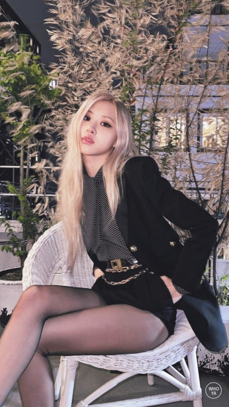

저는 뉴질랜드 오클랜드에서 태어나, 어린 시절을 호주의 멜버른에서 보내며 다양한 문화와 환경 속에서 성장했습니다. 아버지께서 피아노를 치셨던 영향으로 아주 어릴 때부터 음악은 제 일상의 일부였습니다. 부모님은 저와 언니가 예술에 흥미를 가지는 것을 적극 지지해주셨고, 자연스럽게 저는 피아노와 기타를 배우며 감정을 표현하는 법을 익혔습니다.
다문화 환경에서 자라며 저는 열린 사고와 다름을 인정하는 태도를 배울 수 있었고, 이는 훗날 다양한 국가의 팬들과 소통하는 데 큰 자산이 되었습니다. 중학생 시절, 음악을 단순한 취미로 여기기보다 제 인생의 중심으로 삼고 싶다는 마음이 들었고, 그렇게 도전을 결심하게 되었습니다. 15살이 되던 해, 저는 아버지의 권유로 YG 엔터테인먼트 오디션에 참가하게 되었고, 한국이라는 낯선 나라에서의 삶을 시작하게 되었습니다. 가족과 떨어져 지내는 외로움, 언어와 문화의 장벽은 결코 작지 않은 도전이었지만, 음악을 향한 열정과 확고한 꿈이 있었기에 포기하지 않고 끝까지 버틸 수 있었습니다. 이러한 경험들은 저를 더 단단하고 성숙한 사람으로 만들어주었고, 지금의 저를 있게 한 가장 중요한 토대가 되었습니다.